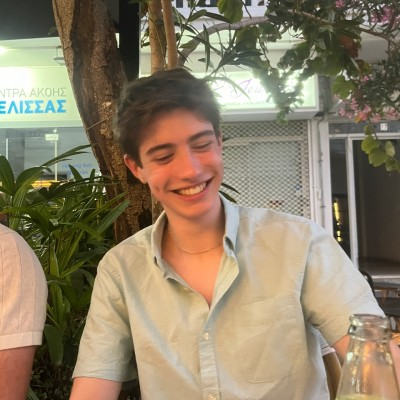
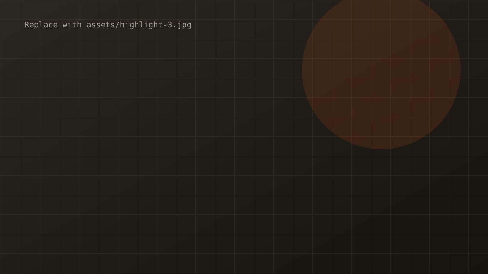

Hi, I'm Hayden.
| 3rd Year BSc Computer Science Student at Heriot-Watt University| Software Engineer at HWRacing | Software Engineer at AeroWatt
| Security, Quant, and Software
Take a look at my projects!
Contact me at: haydenbell2206@gmail.com, or through my LinkedIn provided below.
- StudyingBSc Computer Science (Hons)
- UniversityHeriot-Watt, Edinburgh
- Expected Graduation2028
- Looking forSummer 2027 internships
Highlights

Hull of a Job
A calm, low-stimulation game about cleaning and repairing submarines, built in Unity 6 with URP. Read more
Backtest Overfitting Detector
Flags trading strategies whose backtest results are likely to be overfit rather than genuinely predictive. Read more
Hack The Box Certifications
Working my way towards a number of cyber security certifications. Read more
HW Racing - Vehicle Control Unit
Development in low level programming using RTOS, CAN, and C. Read more
Echo of Shadows
A first person stealth game made in Unity. Focus on performance, lighting, and multi-threaded development. Read more
Mastermind - Hardware-Software Interfacing
Used a raspberry pi, breadboard, LCD, and variety of resistors to make a guessing game using a button, interfaced with C and Assembly. Read more
Experience
-
Oct 2026 — present
Software Engineer · AeroWatt
▪ New Position so responsibilities are yet to be assigned
▪ Working on proprietary flight software -
Sep 2024 — Oct 2026
Embedded Software Engineer · HW Racing
▪ Designed and created a Vehicle control unit to work securely, efficiently, and effectively. Developed CAN message handling, fault detection, watchdogs, and more in embedded C
▪ Working as part of a larger team to create a working formula style vehicle
▪ Large focus on secure programming practices such as bound checking, watch dogs, and static analysis. -
2024 — present
BSc Computer Science · Heriot-Watt University
Relevant Modules
▪ Data Communications and Networking
▪ Data Structures and Algorithms
▪ Hardware-Software Interfacing
▪ Lambda Calculus (Foundations I) and Discrete Maths
▪ Software Engineering
▪ AI and Intelligent Agents
-
2023 - present
Retail Assistant · TKMaxx & CardFactory
Part-time alongside studies. Customer service, teamwork, working under pressure.
(CardFactory 2023-2024; TKMaxx 2025-present).
Skills
- C / C++
- Embedded systems
- Penetration testing
- Linux
- C#
- Unity
- Python
- Git
- Networking
- HTML / CSS / JS
- GNS3
- Shell Scripting
- Vulnerability Assessment
- Embedded C
- RTOS Development
- ARM7
- SQL
- Concurrent Systems
- Multi-Threading
- CAN
- Hardware-Software Interfacing
- Node.js
- Matlab
- Javascript
- PIDDL
Outside of tech
Outwith my professional development, I enjoy a variety of hobbies. I enjoy the outdoors and have spent a lot of time camping and hiking. I also do mountaineering, and alpinism - In the summer of 2026, I climbed Gran Paradiso, the tallest mountain in Italy. I play tennis, in local club competitions, and I train for Ironmans (70.3). In the past, I was a competitive figure skater, competiting in national championships.
I have a deep interest in the stock market and trading, which is where my involvement with quantitative development began. I have been trading indices, futures, company stocks for the last 2-3 years, and more recently made a venture into CFD's. I have consecutively out-performed the S&P 500 and the NASDAQ, with an annual return averaging around 35%, with an all time year high of 80% return. I have fine tuned my trading style over the last few years, and have settled for an overall passive, but accurate style, with a slightly more aggressive CFD trade style.
I like to play chess, which I do primarily online at chess.com. I am currently ~1700 ELO, working towards approaching 2000 ELO before I graduate. I also like to play poker, a card game that directly involves statistics and probability has great interest to me. I am in my universities Poker Society. Analysis of my poker gameplay places me as a TAG player (Tight and Aggressive), and I play ~4.8 bb/100.
My other interests include cars (primarily motorsports and rally-spec), cooking, 3D modelling, drawing, and playing video games (specifically strategy games and games with good stories). I also play the piano, and have recently started learning to play the guitar.